18. الأهداف.
أ . ترسم الأهداف بخطوط متصلة تضم المنطقة المراد مهاجمتها (يوضع داخل الشكل كلمة هدف متبوعة برقم أو حرف
أو اسم رمزي، كما يمكن وضع اسم الوحدة التي ستهاجم).
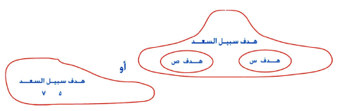
ب. في حالة تقسيم الأهداف للوحدات المرؤوسة يمكن تعيين حدود تقسم الهدف أو تجزئة الهدف إلى أهداف صغيرة
وتسميتها وترسم أهدافنا باللون الأزرق.
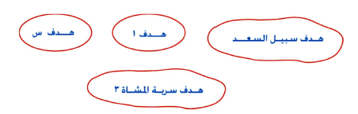
19. خط اتجاه الهجوم. يرسم بالخط المفرد لتحديد حركة القطعات / القوات على الطرق أو
المحاور الموجودة (يستعمل عند رغبة القائد لتنسيق خطة رمي ومناورة خاصة في عمليات الهجوم الليلي
والهجمات المعاكسة).
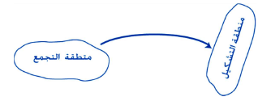
يرسم الخط المزدوج في حالة الانفتاح وعدم تحديد حركة القطعات القوات على طريق معين
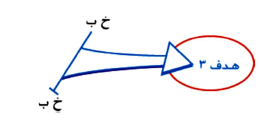
وحدة كلفت باحتلال أهداف متتالية دون تغيير في اتجاه الهجوم يوضح ذلك بأسهم متتالية أو يمر السهم عبر
الأهداف.
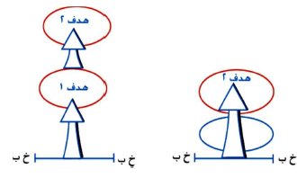
20. سهم متابعة الهجوم بالأمر. يستعمل سهم المؤشر بالأمر عندما يطلب من وحدة أن تكون
جاهزة لمتابعة الهجوم باتجاه السهم ويستعمل عادة مع بيان الحدود والأهداف، ويجب أن يكون هذا السهم بطول
مناسب وبخط مستقيم بحيث لا يؤدي إلى التباس بينه وبين سهم خط اتجاه الهجوم.
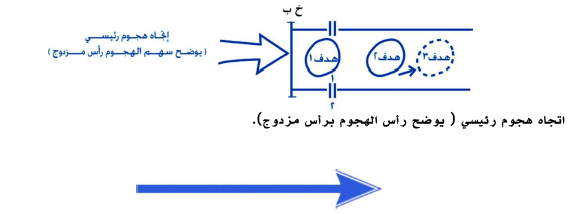
محور هجوم رئيسي (يوضح رأس لسهم مزدوج)
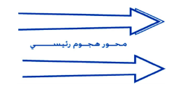
21. محاور التقدم.
أ . يرسم بسهم مزدوج مبيناً عليه اسم رمزي أو كلمة محور التقدم أو رمز الوحدة.
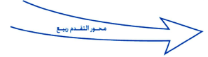
ب. يرسم بخط متقطع مع إضافة وقت وتاريخ تنفيذه داخل الرسم.
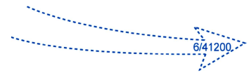
22. خط البدء (خ ب). يرمز إلى خط البدء بخط طولي متصل مبيناً عليه الوقت والتاريخ.
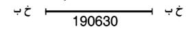
23. خط التماس (خ ت). يمكن أن يكون خط البدء هو خط التماس.
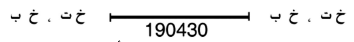
24. منطقة رأس الجسر. يرسم بخط متصل مع وضع الأهداف بداخله.
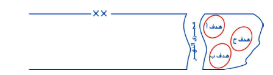
25. التسلسل (التغلغل). يحدد خط التسلل بخطين مع وضع كلمة التسلل والوحدة المتسللة في
المنتصف من الخطين.
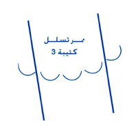
26. خطوط الأخبار. تعيين هذه الخطوط سلفاً في عمليات التقدم أو الهجوم وذلك لتبليغ
الوحدات العليا عند اجتيازها وتعطي أسماء رمزية.
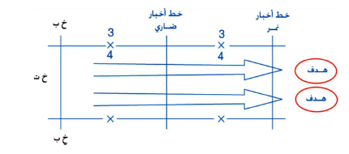
27. عمليات التخطيط للهجوم المعاكس. تستعمل الرموز التالية:
أ. منطقة الاختراق المسموح به باللون الأحمر. | ب. الهدف. | ﺠ . اتجاه الهجوم وخط البدء ومنطقة التشكيل.
| د. موقع الوحدة المعنية لشن الهجوم المعاكس. | ﻫ . خط البدء موقع القوات الأمامية. | و. منطقة التشكيل
للوحدة المهاجمة.
28. تخطيط مواقع الخرق. مدى الخرق المسموح به لقوات العدو ضمن مواقع قواتنا الدفاعية
على ضوء التخطيط لعمليات الهجوم المعاكس وأشر حدود الخرق / الاختراق باللون الأحمر.
29. رموز الوحدات التي تقوم بأعمال الحماية.
30. قتال الإعاقة. كتيبة مشاة آلية 35 تعمل في الإعاقة خلال القتال المستمر.
31. كتيبة مشاة من القوات الصديقة محاصرة. يوضع حجم الوحدة داخل الدائرة ويرسم الرمز
بالأزرق والمثلثات بالأحمر.
32. كتيبة مشاة معادية محاصرة. (يرسم الرمز بالأحمر والمثلثات بالأزرق وللداخل).